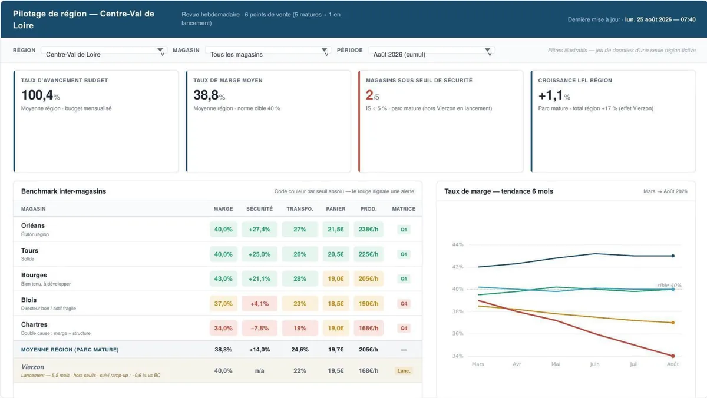
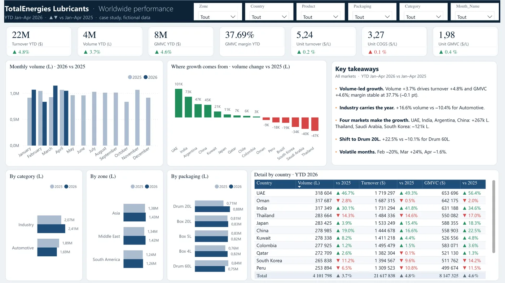

Analyse des écarts
Volume, prix, coûts : d'où vient l'écart entre le réalisé, le budget et l'année précédente.
En recherche active · Orléans et alentours
Paul Delahousse · contrôle de gestion & données
Sur 100 € vendus
Source : comptes déposés au greffeVoir l'analyse complète →
Ce que j'apporte
Cinq ans au contact des clients et des équipes commerciales en grande consommation, puis une année consacrée aux chiffres : je sais d'où vient un écart, et à qui poser la question.
Volume, prix, coûts : d'où vient l'écart entre le réalisé, le budget et l'année précédente.
Power BI et Excel : peu d'indicateurs, chacun relié à sa source et à une décision.
Par client, produit ou point de vente, du chiffre d'affaires jusqu'au résultat.
Chaque chiffre recalculé et contrôlé avant d'être présenté, chaque erreur notée.
Exemple tiré des analyses
Parcours
Cinq ans côté terrain, chez Buitoni, Mondelez puis Tricotage des Vosges : j'ai vu les chiffres depuis le terrain. En 2026, j'ai appris à les construire.
Analyses
Comptes déposés au greffe, trois exercices. Chaque montant a été saisi avec sa page, chaque ratio est recalculé par script. Une donnée absente est affichée « non publiée », jamais estimée. Des questions, pas de jugement.
Cas pratiques
Sur des données fictives : ce sont des exercices, pas des expériences professionnelles.

Région fictive, 6 points de vente : P&L à cinq niveaux, cascade des écarts, ROI promotionnel, tableaux de bord point de vente / région / siège, trame de revue mensuelle.

D'où vient la croissance : volume, chiffre d'affaires et marge de janvier à avril 2026 contre 2025, par pays, catégorie, zone et emballage, avec les messages clés.
Méthode
Chaque chiffre de l'analyse ci-dessus a été saisi, recalculé et contrôlé. J'utilise l'IA comme outil pour aller plus vite, jamais sans vérification. Voici les erreurs détectées pendant ce travail, et comment elles ont été corrigées.